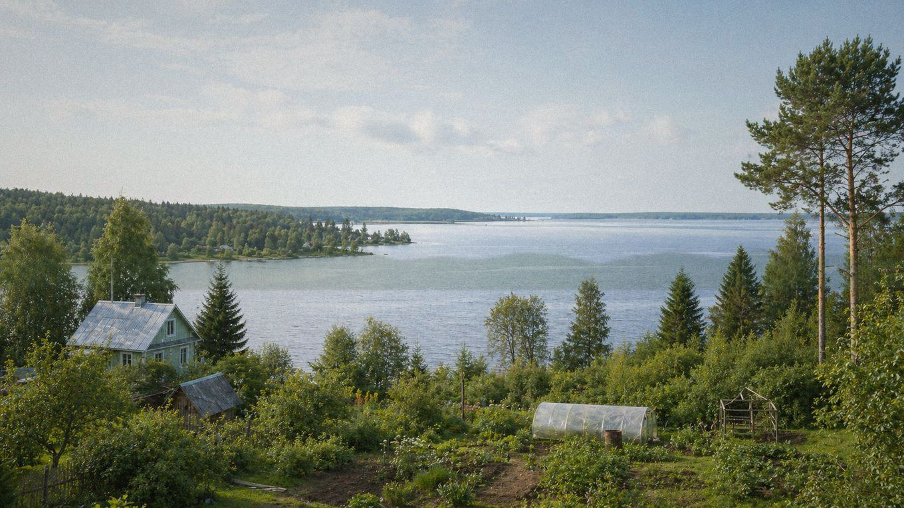

Главная / Курская область / северо-западная лесостепь

Курская область · северо-запад
Что посадить
Что посадить
в северо-западной лесостепи
Северо-запад области ближе к умеренной лесостепи: весна может затягиваться, зато влаги обычно больше. Для сада важны проветривание, дренаж и выбор зимостойких сортов.
Культуры и рекомендации
По умолчанию культуры отсортированы по надёжности: сначала надёжные, затем рекомендованные, с укрытием и рискованные. Сроки ориентировочные — их стоит уточнять по погоде конкретного сезона.
| Культура | Категория | Рекомендация | Где лучше | Сроки | Комментарий |
|---|---|---|---|---|---|
| Вишняплодовое дерево | Плодовые | Надёжно | Защищённый сад | Посадка: апрель или сентябрь. | Зимостойкие сорта обычно стабильны, если не сажать в сырую низину. |
| Гороховощная бобовая культура | Овощи | Надёжно | Открытый грунт | Посев: конец апреля — май. | Ранний посев хорошо использует весеннюю влагу и даёт быстрый урожай. |
| Жимолостьягодный кустарник | Ягодные | Надёжно | Сад | Посадка: апрель или сентябрь; сбор — июнь. | Очень надёжный ягодник для зоны с прохладной весной. |
| Капуста белокочаннаяовощная культура | Овощи | Надёжно | Открытый грунт | Рассада: апрель; высадка: май. | Хорошо использует умеренную влажность, особенно на плодородных грядах. |
| Картофельовощная культура | Овощи | Надёжно | Открытый грунт | Посадка: май; уборка: август–сентябрь. | Одна из самых устойчивых культур для северо-запада области. |
| Крыжовникягодный кустарник | Ягодные | Надёжно | Сад | Посадка: апрель или сентябрь. | Нужна светлая посадка и обрезка, чтобы снизить риск болезней. |
| Лук репчатыйовощная культура | Овощи | Надёжно | Открытый грунт | Севок: конец апреля — май; уборка: август. | Лучше на сухой гряде с хорошим прогревом. |
| Малинаягодный кустарник | Ягодные | Надёжно | Сад | Посадка: апрель или сентябрь. | Даёт стабильный урожай при мульче и поливе после цветения. |
| Морковькорнеплод | Овощи | Надёжно | Открытый грунт | Посев: конец апреля — май. | Рыхлая гряда и влажный старт — главное условие ровных корнеплодов. |
| Редискорнеплод | Овощи | Надёжно | Открытый грунт | Посев: апрель–май, повторно — август. | Лучше удаётся весной и в конце лета, когда меньше жары. |
| Салат листовойзелёная культура | Зелень | Надёжно | Открытый грунт | Посев: апрель–июнь, повторно — август. | Прохладная весна подходит для ранних посевов, летом нужна полутень. |
| Свёклакорнеплод | Овощи | Надёжно | Открытый грунт | Посев: май, после прогрева почвы. | Хорошо набирает массу на чернозёмных почвах при прореживании. |
| Смородина чёрнаяягодный кустарник | Ягодные | Надёжно | Сад | Посадка: апрель или сентябрь. | Любит умеренную влажность, но требует проветривания куста. |
| Укроппряная зелень | Зелень | Надёжно | Открытый грунт | Посев: апрель–июль, с повторениями. | Подходит для повторных посевов с апреля до середины лета. |
| Яблоняплодовое дерево | Плодовые | Надёжно | Сад | Посадка: апрель или сентябрь. | Основная плодовая культура, лучше выбирать зимостойкие районированные сорта. |
| Брокколиовощная культура | Овощи | Рекомендовано | Открытый грунт | Рассада: апрель; высадка: май. | Хорошо удаётся при весенней и позднелетней посадке. |
| Земляника садоваяягодная культура | Ягодные | Рекомендовано | Садовая гряда | Посадка: май или август. | Лучше на высокой гряде с мульчей и без застоя воды. |
| Кабачоктыквенная культура | Овощи | Рекомендовано | Открытый грунт | Посев или высадка: конец мая — начало июня. | Высаживать после прогрева почвы; в холодный старт помогают дуги. |
| Огурецтеплолюбивый овощ | Овощи | Рекомендовано | Открытый грунт / укрытие | Рассада: май; высадка: конец мая — июнь. | В открытом грунте возможен, но временное укрытие повышает стабильность. |
| Сливаплодовое дерево | Плодовые | Рекомендовано | Сад | Посадка: апрель или сентябрь. | Нужны зимостойкие сорта и участок без подопревания корневой шейки. |
| Томаттеплолюбивый овощ | Овощи | Рекомендовано | Открытый грунт / укрытие | Рассада: март; высадка: конец мая — начало июня. | Лучше ранние сорта с укрытием в начале сезона и защитой от холодной росы. |
| Тыкватыквенная культура | Овощи | Рекомендовано | Тёплая гряда | Рассада или посев: конец мая — начало июня. | Ранние сорта вызревают на тёплой компостной гряде. |
| Виноград укрывнойягодная лиана | Ягодные | С укрытием / уходом | Южный склон под укрытием | Посадка: май; укрытие лозы — октябрь. | Возможен как укрывная культура на южной стене или склоне. |
| Грушаплодовое дерево | Плодовые | С укрытием / уходом | Защищённый сад | Посадка: апрель или сентябрь. | Требует защищённого сада и зимостойкого сорта. |
| Перец сладкийтеплолюбивый овощ | Овощи | С укрытием / уходом | Теплица или тёплая гряда | Рассада: февраль–март; высадка: конец мая. | Для стабильного урожая нужна теплица или высокий парник. |
| Абрикосплодовое дерево | Плодовые | Рискованно | Экспериментальный сад | Посадка: весна; цветение требует защиты от заморозков. | Часто повреждается морозами и возвратным холодом во время цветения. |
| Арбузбахчевая культура | Бахчевые | Рискованно | Тёплая гряда | Рассада: апрель; высадка: конец мая — июнь. | Нужна очень тёплая гряда и удачное лето; как основная культура ненадёжен. |
| Персикплодовое дерево | Плодовые | Рискованно | Экспериментальный сад | Посадка: весна; зимняя защита обязательна. | Зимостойкость недостаточна для стабильного плодоношения. |
По выбранным фильтрам культур не найдено.